Cập nhật menu Phúc Long và không gian quán cực chi tiết
Phúc Long là một trong số những thương hiệu trà và cafe lớn của Việt Nam rất được giới trẻ yêu thích. Thức uống của Phúc Long không chỉ được order nhiều trên các app mà còn được khách hàng tìm đến tận nơi để tận hưởng không gian tại quán. Cùng Space T điểm qua menu Phúc Long mới nhất, review thức uống ngon nhất và không gian quán chi tiết nhất qua bài viết sau đây nhé!1. Đôi nét về trà sữa - cà phê Phúc Long
Thương hiệu Phúc Long ra đời tại cao nguyên Lâm Đông vào năm 1968 bởi ông Lâm Bội Minh. Ở những năm 80, ông mở các cửa hàng bán lẻ sản phẩm trà và cafe tại thành phố Hồ Chí Minh. Năm 2012, ông Minh mở rộng kinh doanh, thành lập quán trà sữa - cà phê Phúc Long - chính thức bước chân vào thị trường F&B.
Nhờ “chiếc áo” mới này, Phúc Long đã nhanh chóng trở thành một trong những thương hiệu trà và cà phê hàng đầu tại Việt Nam.
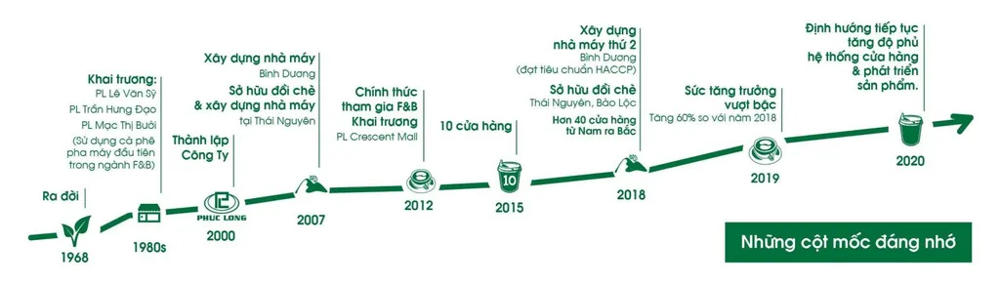 Những cột mốc đáng nhớ của chuỗi trà sữa - cà phê Phúc LongVậy nguyên nhân nào đứng đằng sau sự thành công này?
- Khác với Starbucks tập trung ở phân khúc cao cấp và Trung Nguyên có phân khúc tầm trung, dành cho những người yêu thích cà phê truyền thống của Việt Nam, thì Phúc Long hướng đến đa dạng khách hàng với mức giá tầm trung.
- Thứ hai, Phúc Long chú trọng đến trải nghiệm của khách hàng, từ không gian quan đến sản phẩm. Sản phẩm của Phúc Long được chế biến từ những nguyên liệu chất lượng cao, đảm bảo hương vị thơm ngon, hấp dẫn.
- Thứ ba, Phúc Long không dồn dập mở rộng kinh doanh, mà tập trung nhiều thời gian để nghiên cứu thị trường, hiểu được nhu cầu và sở thích của khách hàng Việt Nam. Từ đó, Phúc Long tạo ra những sản phẩm phù hợp với khẩu vị của người Việt.
- Cuối cùng, chính chiến lược về giá đã giúp Phúc Long ghi điểm trong lòng khách hàng, họ không cần quá băn khoăn mà sẵn sàng chi tiền để trải nghiệm các sản phẩm tại Phúc Long.
Thông tin chung về Phúc Long Coffee & Tea
- Địa chỉ: Với gần 100 cửa hàng trên khắp gần 10 tỉnh thành của Việt Nam, bạn hoàn toàn có thể lựa chọn một địa điểm Phúc Long gần bạn qua Google maps để đến hoặc order Phúc Long qua các nền tảng giao đồ ăn như Shopee Food, Grab, Be,...
- Giờ hoạt động: Tùy từng chi nhánh
- Hotline: 18006779
- Fanpage: http://www.facebook.com/phuclongcoffeeandtea
- Website: https://phuclong.com.vn/
- Giá đồ uống: 35.000đ - 70.000đ tùy loại thức uống và tùy size
2. Review menu Phúc Long chi tiết nhất
Menu Phúc Long khá đa dạng với gần 40 món, trong đó, các món trà là điểm mạnh của thương hiệu này. Điểm đặc biệt trong thức uống trà của Phúc Long là hương vị trà vô cùng đặc biệt, có thể coi là có một không hai trên thị trường trà và cà phê hiện nay.
Phúc Long sở hữu công nghệ sản xuất trà độc quyền và khép kín. Lá trà tại Phúc Long được thu hoạch và chế biến rất đặc biệt, giúp lá trà giữ được vị trà đặc trưng, vừa ngọt, vừa chát, vừa đắng ở một tỷ lệ vừa phải, giúp ly trà trở nên khó quên đối với người uống. Bên cạnh đó, Phúc Long cũng có công nghệ ủ trà lạnh hiện đại, giúp vị trà của Phúc Long mang một nét rất đặc trưng.
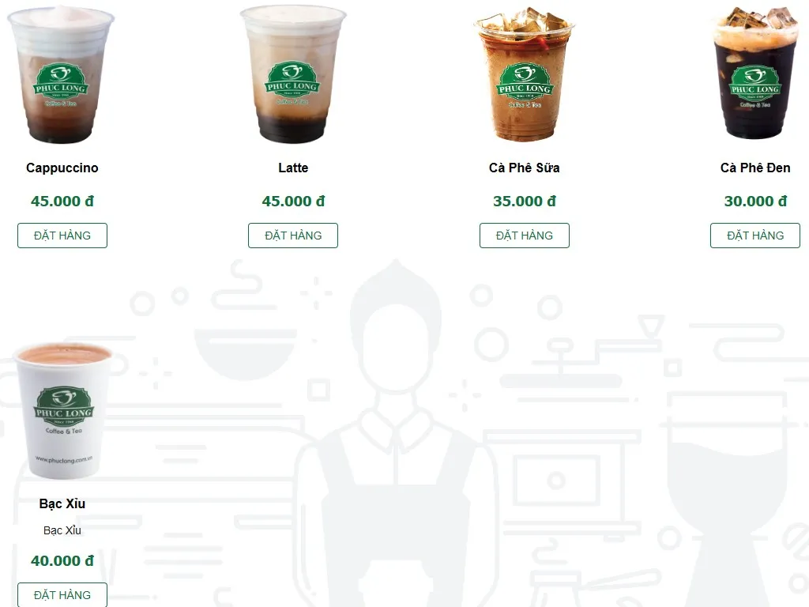 Menu Phúc Long mới nhấtBrewed tea - dao động từ 35.000đ - 55.000đ
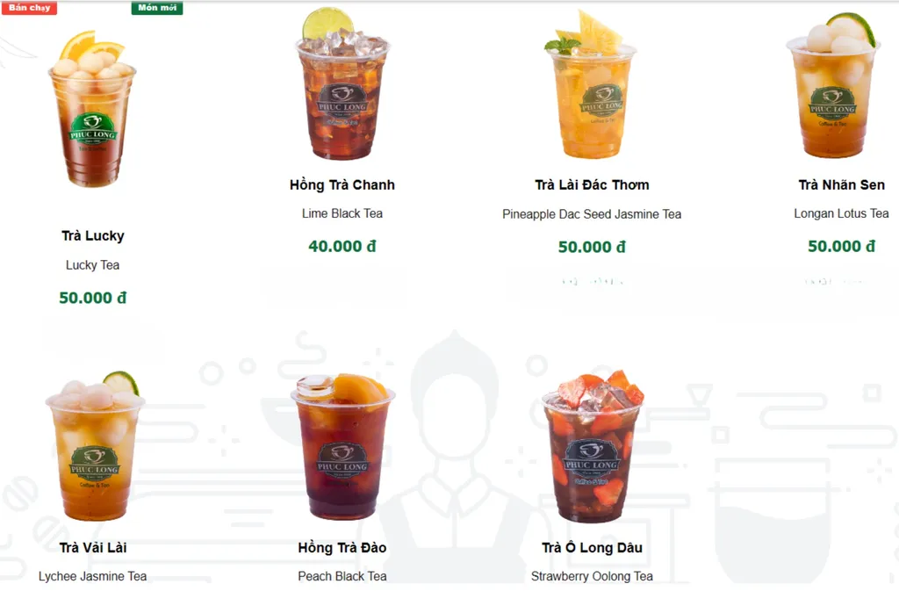 Menu Brewed Tea tại Phúc LongBrewed tea là những món trà ủ theo công thức đặc biệt của Phúc Long. Hương vị trà của menu này vô cùng đậm đặc, thơm ngon và rất khó quên. Đây cũng mà menu có nhiều món best-seller nhất của thương hiệu Phúc Long. Giá của các thức uống này dao động từ 35.000đ - 55.000đ tùy món và tùy size.
Trà Brewed Tea Phúc Long (Best seller trong menu Phúc Long)Milk Tea - giá từ 45.000vnđ đến 70.000vnđ
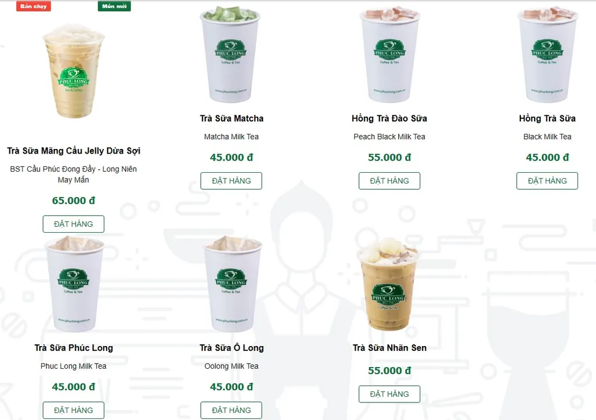 Menu trà sữa tại Phúc LongBên cạnh trà ủ truyền thống thì Phúc Long cũng phát triển những món trà sữa vô cùng ngon và đậm vị. Trà sữa tại Phúc Long là sự hòa quyện của vị trà đậm đặc và sữa thơm ngon, tạo nên thức uống vừa thơm, vừa béo ngậy. Thức uống này có giá từ 45.000vnđ đến 70.000vnđ tùy vị và tùy size.
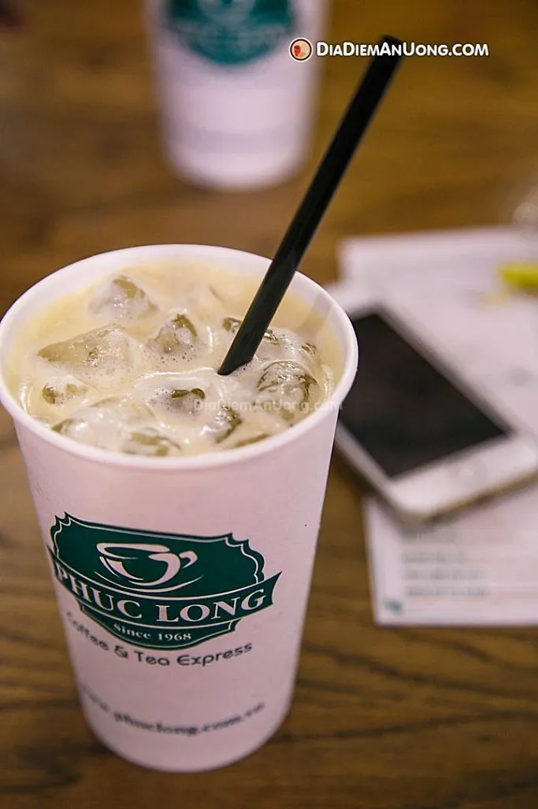 Ly trà sữa Phúc Long truyền thống thơm ngon, béo ngậyCafe - khoảng từ 30,000vnđ - 55,000vnđ/ly
Menu cà phê tại Phúc LongCà phê tại Phúc Long được thu hoạch và chế biến từ những hạt cafe sạch trong trang trại tại các vùng cao nguyên. Hạt cà phê tại Phúc Long giữ được vị đắng và vị thơm, mang đến trải nghiệm tuyệt vời cho mỗi khách hàng khi đến với Phúc Long. Cà phê tại Phúc Long có giá từ 30.000đ - 55.000đ/ly tùy loại và tùy size.
Menu cà phê tại Phúc LongIce blended - dao động từ 50.000vnđ - 70.000vnđ/ly tùy loại
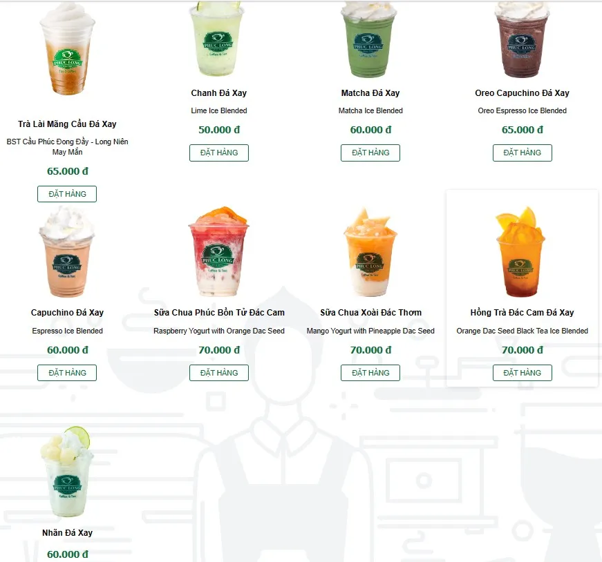 Menu đá xay tại Phúc LongIce blended là một loại thức uống được nhiều người trẻ yêu thích khi đến Phúc Long bởi sự mát lạnh, giúp giải nhiệt hiệu quả. Nếu bạn đang tìm kiếm một món đồ uống giải khát trong cái nắng nóng bức của Sài Gòn, thì đá xay Phúc Long là một lựa chọn tuyệt vời.
Iced Blended tại Phúc Long có giá dao động từ 50.000vnđ - 70.000vnđ/ly tùy loại và tùy size.
3. Những món thức uống must-try trong menu Phúc Long
Trà nhãn sen Phúc Long (Logan Lotus Tea)
Hương vị của trà sen Phúc Long có thể khiến bạn say đắm ngay từ cái nhấp đầu tiên đấy! Sự hòa quyện giữa trà đen, nhãn và hoa sen tạo nên hậu vị đắng nhẹ cùng với vị ngọt dịu và thanh khiết. Đồng thời, hương sen sẽ đưa bạn đến hương vị của đồng quê.
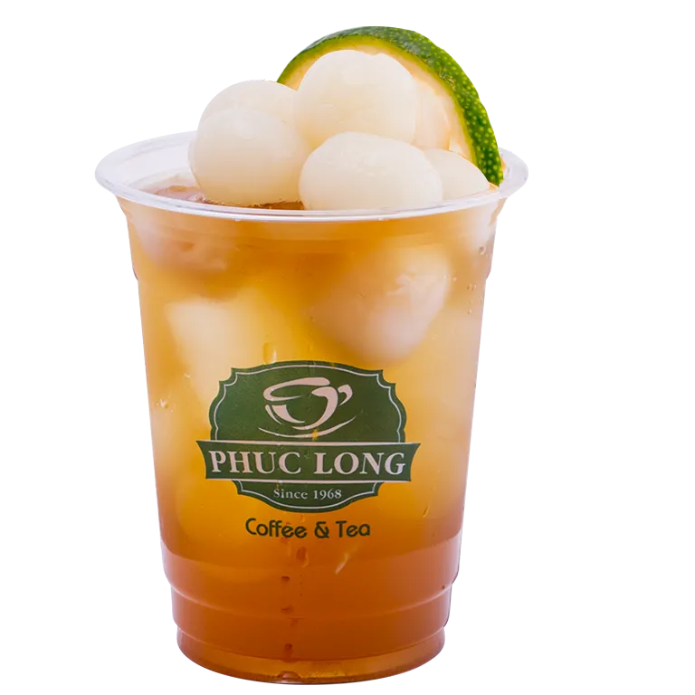 Trà nhãn sen Phúc LongKhông chỉ ngon miệng, màu sắc của trà sen ở cũng là một điểm nhấn nổi bật cho những ai muốn có một tấm ảnh “sống ảo” đẹp. Hãy ghé Phúc Long và thử ngay một cốc trà sen Phúc Long nhé!
Trà ô long dâu Phúc Long (Strawberry Oolong Tea)
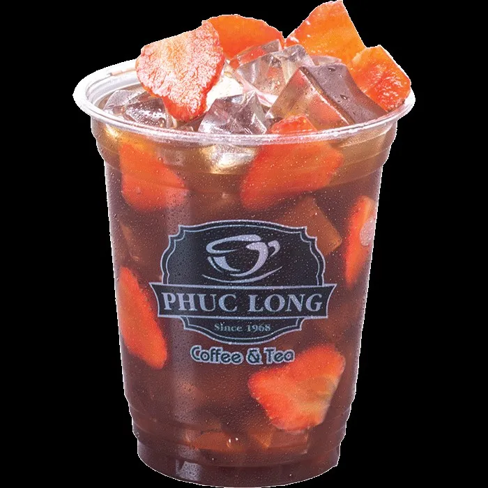 Trà ô long dâu Phúc Long (Strawberry Oolong Tea)Đây là loại thức uống bắt nguồn từ Trung Quốc và được nhiều bạn trẻ Việt Nam yêu thích trong những năm gần đây. Không chỉ có sắc hồng đẹp mắt mà trà ô long dâu còn mang lại nhiều tác dụng như giải nhiệt, bổ sung vitamin C tăng sức đề kháng, hỗ trợ hệ tiêu hóa...
Trà Lucky Phúc Long (Lucky Tea)
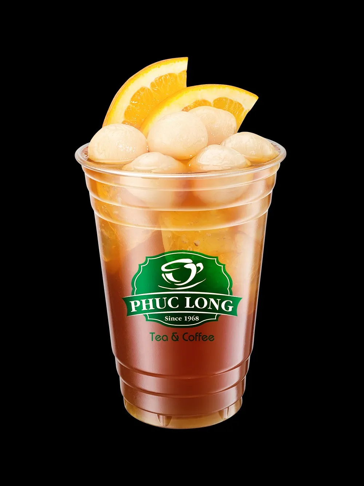 Trà Lucky Tea tại Phúc LongChỉ mới ra mắt tròng vài năm gần đây nhưng trà lucky luôn được nhiều người lựa chọn và nằm top món nước tại Phúc Long. Lucky Tea là sự kết hợp giữa nước trà cùng vị từ mứt ổi và cam. Món nước này được ra đời cùng hy vọng đem lại may mắn cho người dùng, vậy nên khi đến mùa thi cử, bạn có thể ghé qua Phúc Long và thử ngay một em Lucky tea nhé!
Trà vải lài Phúc Long (Lychee Jasmine Tea)
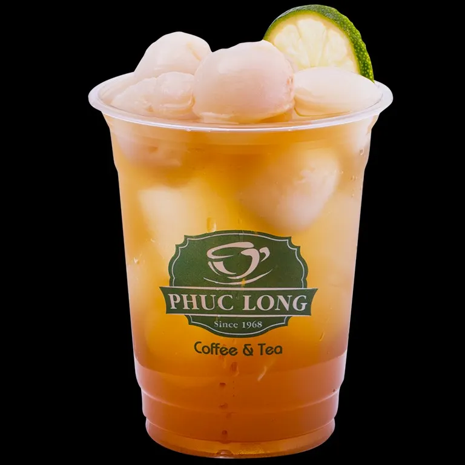 Trà vải lài Phúc LongLuôn nằm trong list đồ uống bestseller trong menu của Phúc Long, trà vải lài mang lại một hương lài quyến rũ hòa quyện cùng hương vải. Những miếng vải giòn, ngọt không chỉ giúp ly trà bớt chát mà còn tạo ra một trải nghiệm uống trà thú vị cho người thưởng thức.
Hồng trà đào Phúc Long (Peach Black Tea)
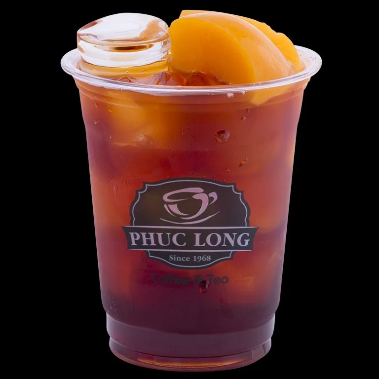 Hồng trà đào Phúc LongĐây là một sự pha trộn tinh tế giữa hương vị đậm đà của hồng trà và hương thơm ngọt ngào của những miếng đào tươi. Với mỗi ngụm trà, bạn sẽ cảm nhận được vị ngọt và một chút đắng nhẹ thoáng qua. Hồng trà đào chính là sự lựa chọn tuyệt vời dành cho những ngày nắng nóng.
3. Review không gian Phúc Long
Phúc Long chi nhánh Lê Văn Duyệt, Quận 1
- Địa chỉ: 197 Lê Văn Duyệt, phường Tân Định, Thành phố Hồ Chí Minh
- Điện thoại: 1800 6779
- Giờ hoạt động: 7:00 - 22:30
Chi nhánh Phúc Long tại Lê Văn Duyệt tạo ấn tượng từ cái nhìn đầu tiên bởi không gian bên ngoài rộng rãi và thoáng đãng. Việc sử dụng nhiều cửa sổ bằng kính và các đường viền cửa bằng màu đen tạo nên một diện mạo hiện đại và sang trọng cho quán.
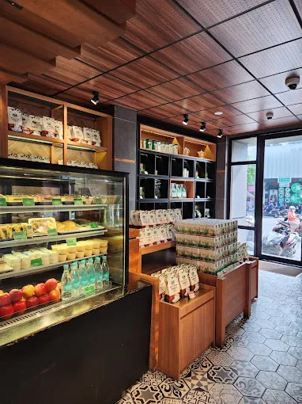 Quầy trưng bày sản phẩm trà và cafe tại Phúc Long - Lê Văn Duyệt, Quận 1 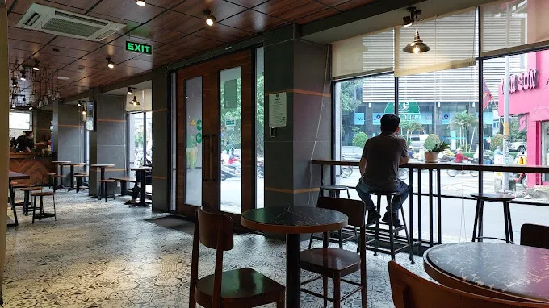 Những chỗ ngồi đặt dọc theo cửa kính tại Phúc Long - Lê Văn Duyệt, Quận 1Đặc biệt, không gian này không chỉ giới hạn ở bàn ghế dài mà còn có những góc ngồi riêng tư cho những ai thích ngồi tập trung làm việc một mình. Ngoài ra, những chỗ ngồi được đặt dọc theo cửa kính, cho phép bạn ngồi thoải mái và thư giãn, đồng thời ngắm nhìn những gì ra bên ngoài khung cửa.